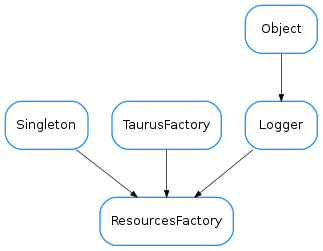

ResourcesFactory¶

-
class
ResourcesFactory[source]¶ Bases:
taurus.core.util.singleton.Singleton,taurus.core.taurusfactory.TaurusFactory,taurus.core.util.log.LoggerA Singleton class designed to provide Simulation related objects.
-
DftResourceName= 'taurus_resources.py'¶ the default resource file name
-
DftResourcePriority= 10¶ priority for the default resource
-
findObjectClass(absolute_name)[source]¶ Obtain the class object corresponding to the given name.
Parameters: absolute_name (:class:~`str`) – the object absolute name string Return type: :class:~`taurus.core.taurusmodel.TaurusModel` Returns: a class object that should be a subclass of a taurus.core.taurusmodel.TaurusModel Raise: (:exc:~`taurus.core.taurusexception.TaurusException`) if the given name is invalid.
-
getAttribute(alias)[source]¶ Obtain the object corresponding to the given attribute name. If the corresponding attribute already exists, the existing instance is returned. Otherwise a new instance is stored and returned.
Parameters: alias (:class:~`str`) – attribute name string alias Return type: :class:~`taurus.core.taurusattribute.TaurusAttribute` Returns: attribute object Raise: (:exc:~`NameError`) if the alias does not exist Raise: (:exc:~`taurus.core.taurusexception.TaurusException`) if the given alias is invalid.
-
getConfiguration(alias)[source]¶ Obtain the object corresponding to the given attribute or full name. If the corresponding configuration already exists, the existing instance is returned. Otherwise a new instance is stored and returned.
Parameters: alias (:class:~`str`) – configuration name string alias Return type: :class:~`taurus.core.taurusconfiguration.TaurusConfiguration` Returns: configuration object Raise: (:exc:~`NameError`) if the alias does not exist Raise: (:exc:~`taurus.core.taurusexception.TaurusException`) if the given alias is invalid.
-
getDatabase(alias=None)[source]¶ Obtain the object corresponding to the given database name or the default database if db_name is None. If the corresponding database object already exists, the existing instance is returned. Otherwise a new instance is stored and returned.
Parameters: alias (:class:~`str`) – database name string alias. If None, the default database is used Return type: :class:~`taurus.core.taurusdatabase.TaurusDatabase` Returns: database object Raise: (:exc:~`NameError`) if the alias does not exist Raise: (:exc:~`taurus.core.taurusexception.TaurusException`) if the given alias is invalid.
-
getDevice(alias)[source]¶ Obtain the object corresponding to the given device name. If the corresponding device already exists, the existing instance is returned. Otherwise a new instance is stored and returned.
Parameters: alias – device name string alias. Return type: :class:~`taurus.core.taurusdevice.TaurusDevice` Returns: device object Raise: (:exc:~`NameError`) if the alias does not exist Raise: (:exc:~`taurus.core.taurusexception.TaurusException`) if the given alias is invalid.
-
getValue(key)[source]¶ Returns the value for a given key
Parameters: key (:class:~`str`) – a key Return type: :class:~`str` Returns: the value for the given key
-
loadResource(obj=None, priority=1, name=None)¶ (Re)Loads the given resource.
Parameters: - obj (:class:~`dict` or :class:~`file` or :class:~`None`) – the resource object. Default is None meaning in will (re)load the default resource: taurus_resources.py from the application directory
- priority (:class:~`int`) – the resource priority. Default is 1 meaning maximum priority
- name (:class:~`str`) – an optional name to give to the resource
Return type: :class:~`dict`
Returns: a dictionary version of the given resource object
-
reloadResource(obj=None, priority=1, name=None)[source]¶ (Re)Loads the given resource.
Parameters: - obj (:class:~`dict` or :class:~`file` or :class:~`None`) – the resource object. Default is None meaning in will (re)load the default resource: taurus_resources.py from the application directory
- priority (:class:~`int`) – the resource priority. Default is 1 meaning maximum priority
- name (:class:~`str`) – an optional name to give to the resource
Return type: :class:~`dict`
Returns: a dictionary version of the given resource object
-
schemes= ('res', 'resource')¶ the list of schemes that this factory supports. For this factory: ‘res’ and ‘resources’ are the supported schemes
-